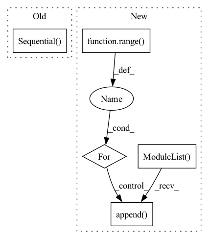

Pattern ID :22064
Before Change
if bn:
self.module_list.append(nn.BatchNorm1d(d_out))
self.module_list.append(getattr(nn, act)(True))
self.module_list = nn.Sequential( *self.module_list)
def forward(self, x):
return self.module_list(x)
After Change
self.output_dim = output_dim
self.num_layers = num_layers
self.lins = nn.ModuleList()
self.bns = nn.ModuleList()
self.lins.append(nn.Linear(input_dim, hidden_dim))
self.bns.append(nn.BatchNorm1d(hidden_dim))
for i in range( self.num_layers - 2) :
self.lins.append( nn.Linear(hidden_dim, hidden_dim))
self.bns.append(nn.BatchNorm1d(hidden_dim))
self.lins.append(nn.Linear(hidden_dim, output_dim))
In pattern: SUPERPATTERN
Frequency: 4
Non-data size: 5
Instances Fragment ID: 69895307
Project Name: ytchx1999/maxp_dgl_graph
Commit Name: f58be51dd0cdd5e93c25fbd239940c88e554bf2e
Time: 2021-10-28
Author: 54234005+ytchx1999@users.noreply.github.com
File Name: gnn/models.py
M Class Name: MLP
N Class Name: MLP
M Method Name: __init__(5)
N Method Name: __init__(9)
M Parent Class: nn.Module
N Parent Class: nn.Module
M File Name: gnn/models.py
N File Name: gnn/models.py
M Start Line: 17
M End Line: 37
N Start Line: 53
N End Line: 70
Before Change
self.alibi = AlibiPositionalBias(heads = heads)
self.to_q = nn.Sequential(
nn.Conv1d(dim, inner_dim, 1, bias = False),
nn.Conv1d(inner_dim, inner_dim, 3, bias = False, groups = inner_dim)
)
self.to_k = nn.Sequential(
nn.Conv1d(dim, inner_dim, 1, bias = False),
nn.Conv1d(inner_dim, inner_dim, 3, bias = False, groups = inner_dim)After Change
// ds convs with different kernel sizes for 4 groups of heads
self.qkv_ds_convs = nn.ModuleList( [])
for _ in range( 3) : // for queries, keys, values
ds_convs = nn.ModuleList([])
for kernel_size in ds_conv_kernel_sizes:
if kernel_size == 0:
ds_convs.append(nn.Identity())
continue
ds_convs.append(CausalDepthwiseConv1d(inner_dim, kernel_size))
self.qkv_ds_convs.append( ds_convs)
// learned alibi positional bias for 4 groups of heads
self.learned_alibi_pos_biases = nn.ModuleList([LearnedAlibiPosBias(heads = heads // 4) for _ in range(4)]) Fragment ID: 69895304
Project Name: lucidrains/tranception-pytorch
Commit Name: b2eaf893294394093839a66effb621645d54cd6c
Time: 2022-06-12
Author: lucidrains@gmail.com
File Name: tranception_pytorch/tranception_pytorch.py
M Class Name: CausalAttention
N Class Name: CausalAttention
M Method Name: __init__(1)
N Method Name: __init__(1)
M Parent Class: nn.Module
N Parent Class: nn.Module
M File Name: tranception_pytorch/tranception_pytorch.py
N File Name: tranception_pytorch/tranception_pytorch.py
M Start Line: 90
M End Line: 109
N Start Line: 99
N End Line: 127
Before Change
self.cat_embedding.append(
nn.Embedding(cat, embed_dim)
)
self.fc = nn.Sequential( nn.Linear(out_features=embed_dim, in_features=1),
nn.ReLU()
)
self.num_embedding = clones(self.fc, no_num)
self.no_num = no_num
self.no_cat = no_catAfter Change
CategoricalEmbedding(cat, embed_dim)
)
self.num_embedding = nn.ModuleList()
for i in range( no_num) :
self.num_embedding.append(
NumericalEmbedding(embed_dim)
)
self.no_num = no_num
self.no_cat = no_cat
Fragment ID: 69895313
Project Name: ogunlao/saint
Commit Name: 35f005449ee9712d4ca6e12208a2948b803307a3
Time: 2021-06-18
Author: ogunlao@yahoo.com
File Name: models/embedding.py
M Class Name: Embedding
N Class Name: Embedding
M Method Name: __init__(5)
N Method Name: __init__(5)
M Parent Class: nn.Module
N Parent Class: nn.Module
M File Name: models/embedding.py
N File Name: models/embedding.py
M Start Line: 54
M End Line: 59
N Start Line: 71
N End Line: 77
Before Change
nn.BatchNorm2d(oup),
)
self.conv2 = nn.Sequential(
// pw
nn.Conv2d(oup, hidden_dim, 1, 1, 0, bias=False),
nn.BatchNorm2d(hidden_dim),
nn.ReLU(inplace=False),
// dw
nn.Conv2d(hidden_dim, hidden_dim, 3, 1, 1, groups=hidden_dim, bias=False),
nn.BatchNorm2d(hidden_dim),
nn.ReLU(inplace=False),
// pw-linear
nn.Conv2d(hidden_dim, oup, 1, 1, 0, bias=False),
nn.BatchNorm2d(oup),
)
def forward(self, x):
x = self.conv1(x)
After Change
nn.BatchNorm2d(oup),
)
self.conv2 = torch.nn.ModuleList()
for i in range( n) :
self.conv2.append( IRBlock(oup, hidden_dim))
def forward(self, x):
x = self.conv1(x)
Fragment ID: 69895300
Project Name: fire717/movenet.pytorch
Commit Name: 6eb59cd47bfde753530ed236335910bed9ba7c1d
Time: 2022-08-12
Author: fire15@126.com
File Name: lib/models/movenet_mobilenetv2.py
M Class Name: InvertedResidual
N Class Name: InvertedResidual
M Method Name: __init__(6)
N Method Name: __init__(6)
M Parent Class: nn.Module
N Parent Class: nn.Module
M File Name: lib/models/movenet_mobilenetv2.py
N File Name: lib/models/movenet_mobilenetv2.py
M Start Line: 83
M End Line: 113
N Start Line: 98
N End Line: 120